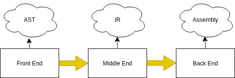
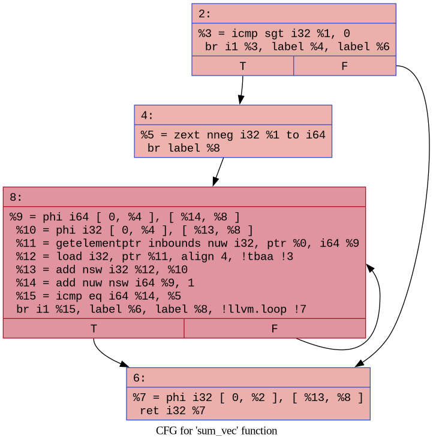
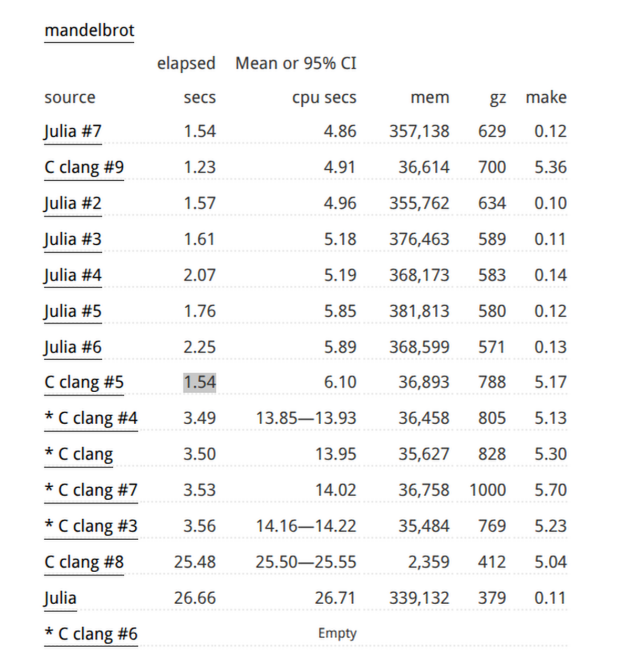
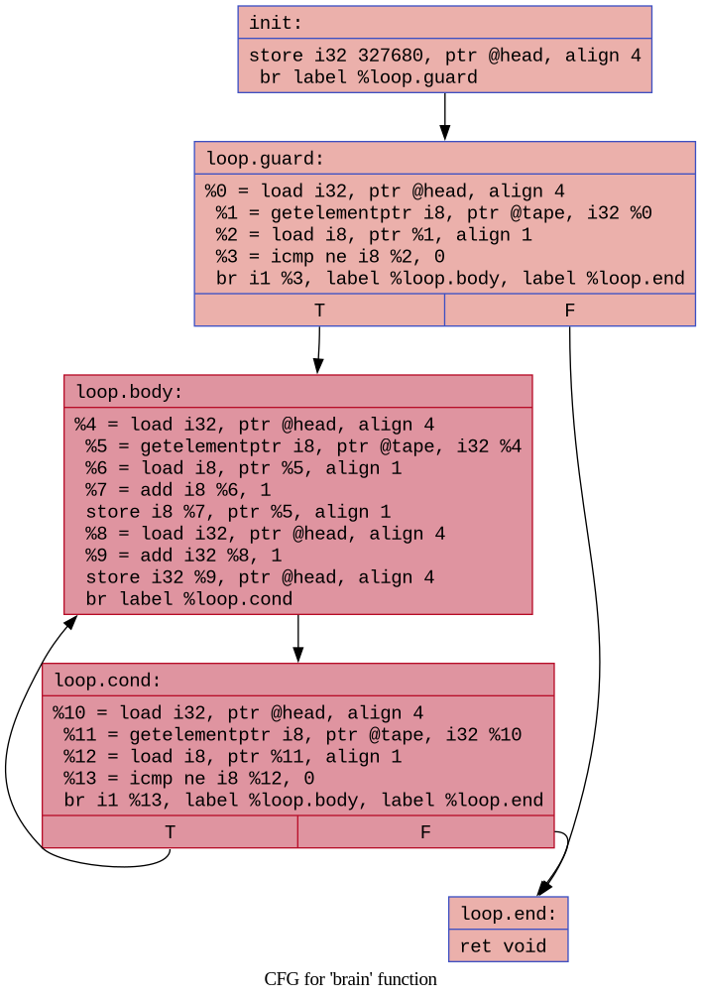

7 Introdução à Infraestrutura de Compilação do LLVM
– João Victor Briganti de Oliveira
joliveira.2022@alunos.utfpr.edu.br
Resumo: Este minicurso tem como objetivo introduzir o LLVM, abordando desde a instalação e configuração da ferramenta até sua utilização prática. Ao longo do conteúdo, exploraremos a criação de um JIT (Just-In-Time compiler) e a implementação de passes, além de apresentar, de forma breve, conceitos técnicos fundamentais de compiladores. A proposta é oferecer uma visão prática e aplicada, permitindo que o participante compreenda o funcionamento básico do LLVM e saiba como utilizá-lo em seus próprios projetos.
7.1 Introdução
O LLVM foi criado como um projeto de pesquisa por Chris Lattner e Vikram Adve nos anos 2000, com o objetivo de oferecer suporte a compilação de diferentes linguagens de programação. O nome LLVM surgiu como um acronimo para “Low Level Virtual Machine”, mas atualmente ele já não é mais válido e LLVM já é o próprio nome do projeto.
O LLVM atualmente é um guarda-chuva para diferentes projetos que são centrados na construção de compiladores e ferramentas relacionadas. Entre os principais projetos desse ecossistema, destacam-se:
- LLVM Core: Um conjunto de bibliotecas que permitem realizar otimizações e gerar cócigo para diversas arquiteturas, todas baseadas em uma representação intermediária comum, o LLVM IR(Intermediate Representation);
- Clang: Um compilador para as linguagens C, C++ e Objective-C que utiliza as bibliotecas do LLVM para análise e geração de código.
Além desses, há outros componentes importantes, como o LLDB(um debugger semalhante ao GDB), linker, bibliotecas, e várias outras ferramentas que continuam sendo desenvolvidas e incorporadas ao ecossistema.
7.1.1 Infraestrutura
Usualmente, um compilador é composto por várias fases necessárias para a geração do código final. Cada uma dessas etapas, desde a análise do código-fonte até a otimização e geração do código de máquina, desempenha um papel específico e, juntas, formam o compilador completo.
De forma mais abstrata, podemos agrupar as diferentes partes do compilador em três grandes fases:
- Front End: Responsável pelo processamento inicial do código-fonte. Nesta etapa, o texto é analisado lexical e sintaticamente, e a AST (Abstract Syntax Tree) é construída. A AST representa a estrutura hierárquica do programa de forma estruturada e manipulável.
- Middle End: Transforma a AST em uma Representação Intermediária (IR), que é uma forma mais próxima do código de máquina, porém ainda independente da arquitetura alvo. É também nesta fase que ocorrem a maior parte das otimizações, visando melhorar o desempenho e reduzir o consumo de recursos.
- Back End: Etapa final do processo, responsável por transformar o código intermediário otimizado em Código de Máquina (assembly) específico para uma determinada arquitetura.

A imagem acima ilustra essas três etapas e as estruturas associadas a cada uma delas ao longo do processo de compilação.
Historicamente, compiladores eram construídos de forma monolítica e pouco modular, o que dificultava sua reutilização em contextos distintos. O grande diferencial introduzido pelo LLVM foi a sua modularização, ele foi projetado como um conjunto de bibliotecas ao invés do compilador monolítico tradicional. Essa estrutura permite que cada componente do compilador seja desenvolvido, mantido e usado de forma independente.
O coração dessa modularidade está no Middle End, que implementa a maioria das transformações e análises sobre a Representação Intermediária (IR) do LLVM. Essas transformações são organizadas em unidades chamadas de passes, que englobam otimizações como simplificação de expressões, eliminação de código morto, inlining de funções e outras análises estáticas. Cada passe é implementado como uma classe C++ que, idealmente, funciona de forma independente e especifica suas dependências quando existem. Essa abordagem permite a composição dinâmica de pipelines de passes, possibilitando que compiladores configurem sua sequência de otimizações de acordo com as características da linguagem, domínio ou restrições de performance.
Para garantir flexibilidade e facilitar a manutenção, o LLVM utiliza arquivos de descrição denominados Target Description Files (.td), escritos em uma linguagem de domínio específico. Esses arquivos definem as propriedades fundamentais da arquitetura alvo, como classes de registradores, formatos e codificações de instruções, restrições de operandos, e outras características essenciais para a geração correta e eficiente do código.
Essas descrições são processadas pela ferramenta TableGen, que gera automaticamente grande parte do código C++ necessário para implementar o gerador de código, incluindo a definição de instruções, regras de seleção, escalonamento de registrados e outros componentes. Essa geração automatizada garante consistência entre os diversos subsistemas do compilador e facilita o suporte a novas arquiteturas.
7.2 Instalação e Ferramentas
7.2.0.1 Ubuntu
Para instalar no Ubuntu, execute:
apt update
apt upgrade
apt install llvm llvm-dev clang7.2.0.2 Fedora
Para instalar no Fedora, execute:
apt dnf update
apt dnf install llvm llvm-devel clangEm ambos os casos o clang é opcional, mas como estaremos desenvolvendo com a infraestrutura do LLVM, é uma boa prática utilizá-lo para manter consistência no ambiente de desenvolvimento.
Após a instalação, verificamos se tudo ocorreu corretamente com o comando:
llvm-config --versionEsse comando é essencial, pois será usado posteriormente para a linkage com as bibliotecas do LLVM.
7.2.1 Compilando a Infraestrutura (Build Manual)
Em cenários mais específicos, pode ser necessário compilar o LLVM manulamente. Para isso é necessário clonar o repositório oficial e configurar o ambiente de build. O LLVM utiliza o CMake como sistema de configuração, logo, é necessário tê-lo instalado para realizar o processo.
Passos básicos:
git clone https://github.com/llvm/llvm-project.git
cd llvm-project
cmake -S llvm -B build -G Ninja [opções]Nota
Se quiser aprender mais sobre como usar o CMake, esta playlist tem algumas explicações sobre o uso da ferramenta.
O comando -G define o sistema que será usado para realizar o build do sistema, ele é similar ao Make, porém em projetos grandes como é o caso do LLVM ele costuma ser mais rápido e eficiente. No entanto, se preferir usar Makefiles, basta substituir essa flag com o comando -G "Unix Makefiles".
7.2.1.1 Opções Importantes do CMake
Durante as configurações da build com CMake, é possível ajustar diversas opções. As principais são: - -DCMAKE_BUILD_TYPE= - Este comando define o tipo da build do sistema, os tipos disponíveis são divididos em: - Release: Build otimizada para uso final. - Debug: Build com símbolos de debug, este é um comando que costuma usar muita memória; - RelWithDebInfo: Versão recomendada para desenvolvimento com debug leve e otimizações. - MinSizeRel: Otimizada para gerar binários pequenos; - -DCMAKE_ENABLE_PROJECTS= - Lista os subprojtos que devem ser compilados (por padrão, todos são compilados). A documentação oficial possui a lista completa das opções. - -DLLVM_PARALLEL_COMPILE_JOBS= - Define o número de threads usadas na compilação. - -DLLVM_PARALLEL_LINK_JOBS= -Define o número de threads usadas na etapa de linkagem.
7.2.2 Ferramentas Comuns
7.2.2.1 Clang
O clang é o compilador C/C++ da infraestrutura LLVM. Ele é responsável por converter o código-fonte em código intermediário LLVM IR (Intermediate Representation), que pode ser analisado, transformado e otimizado pelas demais ferramentas do ecossistema LLVM.
Para gerar o IR a partir de um código C:
clang -S emit -llvm exemplo.c -o exemplo.llAlém da geração de código intermediário o clang é um compilador que pode ser utilizado em produção, e que pode até mesmo substituir o GCC.
7.2.2.2 Opt
O opt é a ferramenta responsável por aplicar passes de otimização e análise sobre o código LLVM IR. Ele permite executar otimizações específicas, combiná-las, e até depurar o efeito de cada transformação individualmente, o que é especialmente útil durante o desenvolvimento dos passos.
Exemplo de uso, aplicando o passe print<loops> (mostra os loops no código)
opt -S -passes="print<loops>" exemplo.ll -o exemplo-opt.ll7.2.2.3 LLI
O lli é o interpretador do LLVM IR. Ele permite executar diretamente arquivos .ll (textuais) ou .bc (bitcode), sem a necessidade de gerar binários nativos. É útil para testes rápidos e validar otimizações.
Exemplo de uso:
lli exemplo.ll7.2.2.4 LLC
O llc é o compilador backend do LLVM. Ele transforma código IR em código assembly específico da arquitetura-alvo. Essa é uma etapa intermediária antes de gerar o binário final.
Exemplo de uso:
llc exemplo.ll7.3 Geração de Código
Para que o compilador consiga gerar código de máquina, ele precisa antes passar por diversas etapas intermediárias. Não entraremos em detalhes sobre o front end do compilador, mas é importante saber que, após a análise do código-fonte e a coleta das informações necessárias, o LLVM transforma a representação da árvore sintática em um código intermediário, chamado de Intermediate Representation (IR).
7.3.1 Código Intermediário (IR)
No contexto de compiladores, existem diferentes formas de representar o código intermediário. O LLVM adota o formato conhecido como three-address code, no qual cada instrução opera sobre, no máximo, três operandos e segue alguns padrões básicos: - Operações \[x = y\ \text{op}\ z\] - Acessos á memória: \[x[y] = z\] \[x = y[z]\] - Branch/Jump: \[\text{if}\ \text{False}\ x\ \text{goto}\ \text{L}\] \[\text{if}\ \text{True}\ x\ \text{goto}\ \text{L}\] Esses formatos se assemelham bastante ao estilo de instruções de máquinas RISC. Por exemplo, na arquitetura RISC-V, uma operação de adição pode ser representada da seguinte forma:
add rd, rs1, rs2 ; rd = rs1 + rs2A mesma operação no LLVM IR seria escrita assim:
%0 = add i32 %1, %2 ; %0 = %1 + %2Note que, no LLVM IR, as instruções são fortemente tipadas, o tipo dos operandos (como i32 para inteiros de 32 bits) é sempre declarado explicitamente. Isso permite maior controle e consistência durante as otimizações e facilita a geração de código para diferentes arquiteturas.
Algumas instruções e processos que são dependentes da arquitetura, costumam ser abstraídas, como é o caso das seguintes funções: - call para chamadas de função; - ret para retorno de função;
7.3.2 Static Single Assignment (SSA)
Além do formato three-address code, outro conceito essencial na infraestrutura do LLVM é o SSA (Static Single Assignment). Nesse formato, cada variável é atribuída apenas uma única vez. Sempre que uma variável precisar ser atualizada, um novo nome (ou registrador virtual) será criado para representar a nova versão daquele valor.
Um exemplo desse formato seria o seguinte:
x = 2 * 4
y = 5 + 10
x = yNo formato SSA, teríamos o seguinte:
x1 = 2 * 4
y1 = 5 + 10
x2 = y1Note que o valor de x nunca é sobrescrito: ele passa a existir como duas versões distintas (x1 e x2). Isso é interessante para otimizações, pois evita ambiguidade no uso de variáveis, facilita a identificação de código morto, permite a eliminação de redundâncias, dispensa a análise de histórico de alterações de uma variável dentre outras otimizações que passam a ser possíveis devido esse formato.
Apesar de ser ótimo para otimizações, esse formato apresenta problemas quando estamos lidando com estruturas de controle como é o caso de laços, em que o valor de uma variável precisa ser atualizada a cada iteração.
Considere o seguinte exemplo em C:
int sum_vec(int *vec, int n) {
int acc = 0;
for (int i = 0; i < n; i++)
acc += vec[i];
return acc;
} Ao compilarmos esse código com o clang, usando a flag -S -emit-llvm, teremos o seguinte código:
define dso_local i32 @sum_vec(ptr noundef %0, i32 noundef %1) #0 {
%3 = alloca ptr, align 8
%4 = alloca i32, align 4
%5 = alloca i32, align 4
%6 = alloca i32, align 4
store ptr %0, ptr %3, align 8
store i32 %1, ptr %4, align 4
store i32 0, ptr %5, align 4
store i32 0, ptr %6, align 4
br label %7
7:
%8 = load i32, ptr %6, align 4
%9 = load i32, ptr %4, align 4
%10 = icmp slt i32 %8, %9
br i1 %10, label %11, label %22
11:
%12 = load ptr, ptr %3, align 8
%13 = load i32, ptr %6, align 4
%14 = sext i32 %13 to i64
%15 = getelementptr inbounds i32, ptr %12, i64 %14
%16 = load i32, ptr %15, align 4
%17 = load i32, ptr %5, align 4
%18 = add nsw i32 %17, %16
store i32 %18, ptr %5, align 4
br label %19
19:
%20 = load i32, ptr %6, align 4
%21 = add nsw i32 %20, 1
store i32 %21, ptr %6, align 4
br label %7, !llvm.loop !4
22:
%23 = load i32, ptr %5, align 4
ret i32 %23
}Apesar de parecer complexo a primeira vista, o código gerado aqui é bastante simples. Não entrarei em todos os detalhes da execução, pois o objetivo principal é ilustrar como um valor é atualizado ao longo do tempo. O foco está na variável de indução, representada aqui por %6, que corresponde a variável de indução i.
Inicialmente, %6 é alocado na pilha com a instrução alloca. No bloco 7, seu valor é carregado na memória para ser comparado com o limite superior da iteração (n), ou seja, temos essencialmente a condição i< n. No bloco 11, esse valor é utilizado para indexar o vetor (vec[i]). Por fim, no bloco 19, o valor de %6 é carregado em memória para o registrador %20, incrementado em 1, e armazenado de volta na memória, representado a atualização de i a cada iteração.
7.3.2.1 PHI Nodes (\(\phi\))
A maneira de resolver esse problema é utilizando o que chamamos de PHI nodes, que nada mais é do que uma instrução especial suada para selecionar um valor com base no caminho de execução que levou a um determinado ponto. Em outras palavras, ele permite representa atualização de um variável sem violar o SSA.
Ao recompilarmos o exemplo com a otimização básica (-O1), obtemos o seguinte:
define dso_local i32 @sum_vec(ptr nocapture noundef readonly %0, i32 noundef %1) local_unnamed_addr #0 {
%3 = icmp sgt i32 %1, 0
br i1 %3, label %4, label %6
4:
%5 = zext nneg i32 %1 to i64
br label %8
6:
%7 = phi i32 [ 0, %2 ], [ %13, %8 ]
ret i32 %7
8:
%9 = phi i64 [ 0, %4 ], [ %14, %8 ]
%10 = phi i32 [ 0, %4 ], [ %13, %8 ]
%11 = getelementptr inbounds nuw i32, ptr %0, i64 %9
%12 = load i32, ptr %11, align 4, !tbaa !3
%13 = add nsw i32 %12, %10
%14 = add nuw nsw i64 %9, 1
%15 = icmp eq i64 %14, %5
br i1 %15, label %6, label %8, !llvm.loop !7
}Percebam que o código ficou menor, isso porque as variáveis que antes estavam sendo alocadas na pilha estão sendo manipuladas diretamente pelo registrador. Isso é possível pois agora temos as instruções PHI, se observarmos o fluxo de atualização da variável de indução (i), temos que ela estará sendo representada unicamente pelo registrador %9, que está na seguinte instrução:
%9 = phi i64 [0, %4], [%14, %8]Podemos interpretar essa execução da seguinte maneira, caso o fluxo de execução esteja vindo do bloco 4 o valor de i será 0, caso ele esteja vindo do próprio bloco %8, seu valor será %14, que se observarmos nada mais é do que %9 + 1.
7.3.3 Bloco Básico
Até agora, discutimos como as instruções são representadas dentro do LLVM. No entanto, além das instruções individuais, um programa também é compost por Blocos Básicos (Basic Blocks), que são estruturas fundamentais para o controle de fluxo da execução.
Um bloco básico é definido como uma sequência contínua de instruções, sem desvios ou saltos internos, ou seja, é executado de maneira linear do início ao fim. Cada bloco é precedido por um rótulo (label), que possui uma única entrada e uma única saída, apesar dessa saída poder a diferentes blocos básicos. Na prática o máximo de instruções possíveis são unificadas em um único bloco básico, e ele é quebrado somente quando temos uma alteração no fluxo de execução.
Na imagem abaixo temos um exemplo do fluxo de controle do código de soma dos elementos de um vetor:

Cada um desses blocos tem um significado diferente durante a execução do algoritmo: - Bloco 2: Esse bloco é o que chamamos de loop guard, ele verifica se a execução do loop vai ou não acontecer. No caso aqui ele está verificando se n é maior que 0; - Bloco 4: Esse seria o cabeçalho do loop, aqui ele está apenas fazendo uma conversão de n para um inteiro de 64 bits com sinal. - Bloco 8: Aqui é onde temos a execução do loop em si, enquanto sua condição de saída for falsa ele irá continuar executando. - Bloco 6: Esse é o último bloco de código, nele temos o retorno da função como um todo.
Nota
O comando para gerar esse gráfico com o LLVM é o seguinte:
opt -passes=dot-cfg example.s --disable-output dot -Tpng .func_example.dot -o func_example.png
7.3.4 Control Flow Graph
Percebam que esse conjunto de blocos formam um grafo, que tem o nome de Grafo de Fluxo de Controle (Control Flow Graph, CFG). Esse grafo representa todos os caminhos possíveis de execução dentro de uma função.
Essa representação em grafo de blocos básicos nós permite realizar transformações de código, tal qual: Detecção de código morto, transformações e fusões de laço, predição de desvio, reordenação de instruções, propagação de constante.
Além disso, o formato em grafo permite a análise de propriedades como dominação, essencial para entender a estrutura de controle do programa. Dizemos que um bloco A domina um bloco B se todo caminho possível até B passa necessariamente por A. Ou seja, A sempre é executado antes de B, em qualquer fluxo de controle válido. Essa dominação nós permite construir a chamada árvore de dominação, que basicamente nós diz quem manda em quem, isso é importante pois permite determinar onde é seguro movimentar código e identifica pontos de junção onde múltiplos fluxos se encontram, permitindo que o compilador faça transformações mais agressivas com a garantia que o programa continuara correto.
7.4 Implementando um JIT
Linguagens interpretadas existem há muito tempo e são amplamente difundidas. Nelas, o código-fonte é executado por um interpretado, que lê e executa as instruções uma a uma. Esse modelo é comum em linguagens como Python, Lua e Javascript, e tem como principal vantagem a portabilidade: O mesmo código pode ser executado em diferentes plataformas sem necessidade de compilação prévia. Foi justamente essa características que ajudou a tornar a linguagem Java tão popular, ao permitir que programas fossem executados em qualquer dispositivo com uma máquina virtual compatível.
O problema desse modelo usualmente está no seu desempenho que geralmente é inferior ao de programas compilados, pois o código não é convertido diretamente em instruções de máquina. Para contornar essa limitação, surgiu o JIT (Just-In-Time), uma técnica de compilação, que combina a flexibilidade dos interpretadores com a eficiência dos compiladores. Em vez de interpretar todo o código, o JIT identifica trechos críticos durante a execução e os compila dinamicamente para código nativo, melhorando significativamente o desempenho.
7.4.1 JIT na prática
Diversas linguagens interpretadas hoje possuem algum tipo de compilador JIT, como é o caso de Java (com a JVM), Lua (com LuaJIT) e JavaScript (com o V8). A linguagem Julia, por exemplo, também adota esse modelo usando o LLVM como backend para compilar funções á medida que são chamadas.
Abaixo temos um benchmark da aplicação Mandelbrot, comparando diretamente as linguagens Julia e C. Observando a coluna secs, vemos que a implementação mais rápida em C executa em 1,23 segundos, enquanto a mais rápida em Julia conclui em 1,54 segundos, uma diferença de apenas 31 milissegundos. Esse resultado evidencia como a compilação JIT pode elevar significativamente o desempenho de linguagens interpretadas, a ponto de competirem diretamente com linguagens tradicionalmente conhecidas pela sua eficiência, como o C.

Uma das grandes vantagens do JIT é a capacidade de realizar otimizações específicas para o hardware em que o programa está sendo executado. Como a compilação ocorre em tempo de execução, o compilador pode gerar instruções otimizadas para a arquitetura exata do processador em uso, o que um compilador tradicional geralmente não consegue fazer sem uma configuração prévia.
Além disso, o JIT tem acesso a informações dinâmicas sobre a execução do programa, o que permite aplicar otimizações adaptativas com base no comportante real do código em tempo de execução. Isso é particularmente poderoso, pois muitas otimizações envolvem algum trade-off, uma transformação que melhora o desempenho em um cenário pode piorá-lo em outro. Com o JIT é possível evitar isso, ajustando as otimizações as características do programa em execução naquele momento específico.
7.4.2 Porque Brainfuck?
Brainfuck é uma linguagem de programação criada em 1993 por Urban Müller. Ela ficou conhecida por seu estilo extremamente criptográfico e minimalista: seus programas são difíceis de escrever e ler, e seu propósito nunca foi ser uma linguagem prática ou de uso real, mas sim uma linguagem esotérica, criada como um experimento.
Apesar disso, Brainfuck é uma escolha interessante para o estudo da implementação de linguagens. Isso porque ela possui uma semântica extremamente simples, o que facilita o entendimento e a construção de interpretadores, compiladores ou JITs.
Nessa linguagem todos os programas operam em cima de uma “fita”, uma região de memória que possui ao menos 30000 células (basicamente um array) inicializados com zero, e um ponteiro que nós diz qual a posição inicial nessas células. Toda computação se dá por meio da movimentação do ponteiro e da manipulação dos valores das células. Seus comandos são codificados em ASCII, e incluem:
- +: Incrementa em 1 o valor da célula indicada pelo ponteiro;
- -: Decrementa em 1 o valor da célula indicada pelo ponteiro;
- >: Move o ponteiro uma posição para a direita;
- <: Move o ponteiro uma posição para a esquerda;
- [: Se o valor da célula atual for zero, pula para o comando após o
]correspondente; - ]: Se o valor da célula atual for diferente de zero, volta para o comando após o
[correspondente; - .: Imprime o valor da célula atual;
- ,: Lê um valor de entrada e armazena na célula atual;
Qualquer outro caractere presente no programa é ignorado. Existem variações e extensões da linguagem com novos comandos, mas esses são os únicos necessários para implementar um interpretador funcional.
7.4.3 Detalhes de Implementação
Nesta seção, exploramos os detalhes de implementação de um JIT para Brainfuck. Vamos analisar as principais partes do código que compõem o programa, explicando como cada uma contribui para a geração e execução dinâmica do código.
Para melhorar organizar sua explicação, os detalhes de implementação serão divididos em blocos conforme a responsabilidade de cada conjunto de funções. Iniciamos pelas estruturas básicas utilizadas pelo LLVM e declaração de funções externas, passando pela alocação de memória, criação das funções principais, até a geração do IR com base no código Brainfuck.
7.4.3.1 Inicialização do Módulo
Antes de iniciarmos a compilação dos comandos em si, é necessário criar o módulo de compilação que será utilizado. É nesse módulo que todo o código gerado será inserido. Ele é responsável por armazenar a lista de variáveis globais, funções, referências externas (como bibliotecas), tabela de símbolos e as características da arquitetura alvo.
Além do módulo, também é necessário criar o contexto LLVM, que deve ser inicializado antes do módulo. O LLVMContext pode ser entendido como a estrutura que armazena o estado interno do LLVM. Ele gerencia todos os tipos, constantes e metadados utilizados durante a geração de código, funcionando como o “ambiente” onde o IR será construído.
void InitializeModule() {
ctx = std::make_unique<LLVMContext>();
mod = std::make_unique<Module>(MODULE_LABEL, *ctx);
}Após a inicialização dessas estruturas, realizamos a definição de algumas funções externas que serão utilizadas durante a execução do programa. No caso do brainfuck somente duas funções são necessárias, getchar e putchar, abaixo temos a definição desse código:
void DeclareExternFunctions() {
getChar = mod->getOrInsertFunction("getchar", IntegerType::getInt8Ty(*ctx));
putChar = mod->getOrInsertFunction("putchar", IntegerType::getInt8Ty(*ctx), IntegerType::getInt8Ty(*ctx));
}7.4.3.2 Alocação de Memória
No Brainfuck, temos duas estruturas principais que precisam ser alocadas: a tape (fita), que representa a memória do programa, e o head, que é o ponteiro para a posição atual nessa fita.
Embora teoricamente o head não precise ser uma variável global, algumas otimizações aplicadas pelo LLVM durante a geração do IR podem acabar quebrando a aplicação. Por isso, optamos por mantê-lo como uma variável global, garantindo consistência no acesso à memória.
Abaixo está o código responsável pela alocação da tape:
void AllocateTape() {
Type *I = IntegerType::getInt8Ty(*ctx);
ArrayType *A = ArrayType::get(I, TAPE_SIZE);
tapePtr = new GlobalVariable(*mod, A, false, Function::InternalLinkage,
ConstantAggregateZero::get(A), TAPE_LABEL);
}Aqui, estamos criando um array global com TAPE_SIZE = 655360, composto por inteiros de 8 bits. O tipo de linkagem usado é InternalLinkage, o que significa que essa variável é “privada” ao módulo. A fita é inicializada com zeros (ConstantAggregateZero), e seu rótulo é definido como TAPE_LABEL = "tape".
A alocação da variável head segue a mesma lógica, com pequenas diferenças no tipo utilizado:
void AllocateHeadPosition() {
Type *I = IntegerType::getInt32Ty(*ctx);
headPositionVar = new GlobalVariable(*mod, I, false, Function::InternalLinkage,
ConstantAggregateZero::get(I), HEAD_LABEL);
}7.4.3.3 Criação de Funções
Para que os códigos gerados possam ser executados corretamente, é necessário definir um ponto de entrada, o que neste caso é feito por meio da criação de funções dentro do módulo LLVM. Neste projeto, utilizamos duas funções: a main, que serve principalmente como suporte durante o processo de geração do IR e é útil para executar o código e verificar o estado do ambiente de compilação, e a função brain, que é onde o código Brainfuck compilado será inserido.
Abaixo temos o código que implementa a função do brain:
void InsertBrainFunction() {
FunctionType *brainDecl = FunctionType::get(Type::getVoidTy(mod->getContext()), {}, false);
Function *brainFunc = Function::Create(brainDecl, Function::InternalLinkage, "brain", *mod);
BasicBlock *BB = InsertBrainIR(brainFunc);
ReturnInst::Create(mod->getContext(), BB);
}Percebam que na criação dessa função, começamos definindo seu tipo com FunctionType::get, indicando que ela não retorna nenhum valor (void), não possui parâmetros e não é variádica. Em seguida, a função é criada com Function::Create, utilizando InternalLinkage, o que significa que sua visibilidade está restrita ao módulo atual, e fornecemos a ela o nome "brain". Logo após, é criado um bloco básico com InsertBrainIR, que será explicado futuramente, e finalmente finalizamos a função com a definição com uma instrução de retorno simples, inserida com ReturnInst::Create.
Abaixo temos o código que implementa a função do main:
void InsertMainFunction() {
FunctionType *mainDecl = FunctionType::get(Type::getInt32Ty(mod->getContext()), {Type::getInt32Ty(mod->getContext()), PointerType::getUnqual(mod->getContext())}, false);
Function *mainFunction = Function::Create( mainDecl, Function::InternalLinkage, MAIN_FUNC_LABEL, *mod);
Value *arg = mainFunction->getArg(0);
arg->setName("argc");
arg = mainFunction->getArg(1);
arg->setName("argv");
BasicBlock *BB = BasicBlock::Create(mod->getContext(), MAIN_FUNC_LABEL, mainFunction);
CallInst *brainf_call = CallInst::Create(mod->getFunction(BRAIN_FUNC_LABEL), "", BB);
brainf_call->setTailCall(false);
ReturnInst::Create(mod->getContext(),
ConstantInt::get(mod->getContext(), APInt(32, 0)), BB);
}Já na definição da função main, seguimos uma estrutura parecida, mas com pequenas diferenças. Aqui, o tipo de retorno é um inteiro de 32 bits, e os parâmetros são um inteiro (argc) e um ponteiro não qualificado (argv), definido com PointerType::getUnqual. Após declarar a função com InternalLinkage, também nomeamos seus parâmetros para facilitar o entendimento do IR gerado. Em seguida, é criado um bloco básico inicial onde realizamos a chamada para a função brain, usando CallInst::Create, e por fim, adicionamos um return 0, representado por uma constante inteira de valor zero. Com isso, temos um ponto de entrada funcional e estruturado tanto para testes quanto para a execução do programa compilado.
7.4.3.4 Geração do Copo da Função brain
Até este ponto, construímos toda a infraestrutura de suporte necessária para gerar o código compilado a partir de Brainfuck. O próximo passo é definir a estrutura do código que realizará o parser e inserirá as instruções no módulo brain.
O processo de identificação das instruções de Brainfuck é bastante simples, com exceção dos loops ([ e ]), que exigem um tratamento especial, por isso, seu processamento é dividido em duas etapas. Isso será melhor detalhado na sessão de construção dos loops.
Começamos pela seguinte função
BasicBlock *InsertBrainIR(Function *brainFunc) {
BasicBlock *BB = BasicBlock::Create(*ctx, "init", brainFunc);
IRBuilder<> builder(BB);
builder.CreateStore(builder.getInt32(HEAD_POS), headPositionVar);
return InsertBrainIR_r(brainFunc, std::make_unique<IRBuilder<>>(BB), BB);
}Essa função é responsável por criar o bloco básico inicial da função brain, nomeado como init. Em seguida, adicionamos uma instrução de store, que armazena a posição inicial da head na memória do programa. Essa posição é definida por HEAD_POS = 655360 / 2, ou seja, a cabeça começa no meio da fita (tape). Após isso, iniciamos a inserção das instruções de Brainfuck nesse mesmo bloco, através da chamada recursiva InsertBrainIR_r.
A função InsertBrainIR_r é a seguinte:
BasicBlock *InsertBrainIR_r(Function *brainfck, std::unique_ptr<IRBuilder<>> builder, BasicBlock *BB) {
char input;
while (file.get(input)) {
switch (input) {
case '-':
case '+': {
InsertIncIR(*builder, input == '+' ? 1 : -1);
break;
}
case '<':
case '>': {
InsertPtrIncIR(*builder, input == '>' ? 1 : -1);
break;
}
case ',': {
InsertGetCharIR(*builder);
break;
}
case '.': {
InsertPutCharIR(*builder);
break;
}
case '[': {
numBrackets++;
BB = InsertStartLoopIR(*builder, brainfck);
builder = std::make_unique<IRBuilder<>>(BB);
break;
}
case ']': {
if (numBrackets == 0) {
std::string err = "Error: ']' found without a pair \n";
throw err;
}
numBrackets--;
return InsertLoopExitCondIR(*builder, brainfck);
}
default:
break;
}
}
if (numBrackets != 0) {
std::string err = "Error: Incorrect number of pair brackets\n";
throw err;
}
return BB;
}Essa função atua como um interpretador recursivo. Seu papel é analisar o conteúdo do arquivo e traduzir cada caractere em instruções equivalentes no IR do LLVM.
7.4.3.5 Tradução de Comandos Brainfuck
Finalmente chegamos a geração das instruções de código que representam os comandos do Brainfuck. Começamos pelas instruções + e -, que são tratadas pela função InsertIncIR, abaixo temos o seu código:
void InsertIncIR(IRBuilder<> &builder, int inc) {
Value *pos = builder.CreateLoad(builder.getInt32Ty(), headPositionVar);
Value *cellPtr = builder.CreateGEP(builder.getInt8Ty(), tapePtr, pos);
Value *cell = builder.CreateLoad(builder.getInt8Ty(), cellPtr);
Value *newValue = builder.CreateAdd(cell, builder.getInt8(inc));
builder.CreateStore(newValue, cellPtr);
}Nessa função, o primeiro passo é obter a posição atual da head, armazenada em uma variável global. Como globais em LLVM são representadas como ponteiros, realizamos um carregamento (load) do valor da head a partir desse ponteiro. Com essa posição em mãos, usamos a instrução GEP (GetElementPtr) para calcular o endereço exato na memória onde o valor da célula correspondente se encontra. Após isso, realizamos o carregamento do valor contido na célula, aplicamos a operação de adição com o incremento recebido (que pode ser positivo ou negativo), e então armazenamos o novo valor de volta nesse endereço.
As instruções < e > são tratadas de forma similar, com a diferença de que elas apenas modificam a posição da head. A função responsável por isso é a InsertPtrIncIR, representada pelo código abaixo:
void InsertPtrIncIR(IRBuilder<> &builder, int inc) {
Value *pos = builder.CreateLoad(builder.getInt32Ty(), headPositionVar);
Value *newValue = builder.CreateAdd(pos, builder.getInt32(inc));
builder.CreateStore(newValue, headPositionVar);
}Nessa função temos um carregamento da posição atual da head, onde aplicamos a operação de incremento ou decremento, e então por fim armazenamos o novo valor na variável global que representa a posição da cabeça da fita.
Por fim temos as instruções . e ,, que correspondem respectivamente às chamadas às funções putchar e getchar. Ambas compartilham uma estrutura muito parecida, como apresentado nos códigos abaixo:
void InsertPutCharIR(IRBuilder<> &builder) {
Value *pos = builder.CreateLoad(builder.getInt32Ty(), headPositionVar);
Value *cellPtr = builder.CreateGEP(builder.getInt8Ty(), tapePtr, pos);
Value *cell = builder.CreateLoad(builder.getInt8Ty(), cellPtr);
Value *putcharParams[] = {cell};
CallInst *putcharCall = builder.CreateCall(putChar, putcharParams);
putcharCall->setTailCall(false);
}
void InsertGetCharIR(IRBuilder<> &builder) {
CallInst *getCharCall = builder.CreateCall(getChar);
getCharCall->setTailCall(false);
Value *read = builder.CreateTrunc(getCharCall, builder.getInt8Ty());
Value *pos = builder.CreateLoad(builder.getInt32Ty(), headPositionVar);
Value *cellPtr = builder.CreateGEP(builder.getInt8Ty(), tapePtr, pos);
builder.CreateStore(read, cellPtr);
}No caso da InsertPutCharIR, recuperamos novamente a posição da head, calculamos o endereço da célula com GEP, carregamos o valor armazenado e o passamos como argumento para a chamada da função putchar. Já na função InsertGetCharIR, realizamos a chamada da função getchar, truncamos o valor retornado para um byte (já que as células da fita têm tamanho de 8 bits), determinamos a posição atual da head, e armazenamos esse valor na célula apropriada.
É interessante perceber como essas funções, apesar de lidarem com diferentes comandos, seguem padrões muito semelhantes de operação. Todas elas manipulam valores diretamente relacionados à posição da head na fita, realizam operações simples como incrementos, carregamentos ou chamadas de função, e utilizam instruções bem definidas e diretas do LLVM. Cada comando é mapeado para um pequeno conjunto de instruções IR, o que torna o código resultante próximo de um código de máquina.
7.4.3.6 Construção de Loops
A estrutura de um loop no Brainfuck é, um dos componentes mais complexos de se implementar. Isso acontece porque ela exige certo conhecimento prévio sobre como a construção de fluxo de controle funciona no LLVM. Como já foi explicado anteriormente, o LLVM trabalha com a ideia de blocos básicos. Cada bloco básico deve, obrigatoriamente, ser encerrado por uma instrução que defina claramente o próximo passo no fluxo de execução. Isso é feito geralmente por meio de instruções de branch, que direcionam o fluxo para outro bloco básico, ou por instruções de término, como um return.
Diante disso, antes mesmo de gerarmos o código para a criação dos loops do Brainfuck, precisamos compreender que essa estrutura de controle precisa ser devidamente respeitada dentro do modelo do LLVM. Em Brainfuck, os loops seguem uma lógica bem específica: ao encontrarmos um caractere [, é necessário verificar se o valor da célula atual é igual a zero. Se for, podemos pular diretamente para o final do loop. Caso contrário, o corpo do loop precisa ser executado. Após executar esse corpo, a próxima verificação ocorre quando encontramos o caractere ], momento em que voltamos a verificar o valor da célula atual. Se o valor for zero, encerramos o loop, se não, voltamos à execução do corpo do laço.
Uma maneira clara de visualizar essa estrutura é por meio da seguinte imagem:

A imagem acima representa a compilação da linha de código [+>] em Brainfuck. Podemos observar que, antes do início do loop, existe um bloco qualquer, neste caso é o init, que representa a porção de código que precede o loop. Em seguida, temos o loop.guard, que é o bloco responsável por verificar se o loop deve ou não ser executado. Esse bloco é a tradução direta do caractere [. Se a condição for falsa, saltamos diretamente para o loop.end, que representa o final do loop (e que poderia apontar para qualquer outro ponto do programa). Se a condição for verdadeira, prosseguimos para o bloco loop.body, onde estão as instruções internas do loop, no nosso exemplo é a instrução +>. Ao final da execução do corpo, há um salto para o bloco loop.cond, que realiza uma nova verificação da condição de parada, funcionando como o caractere ].
A função que estrutura esse comportamento é a InsertStartLoopIR, responsável por criar os blocos básicos que formam a estrutura do laço. Veja seu código a seguir:
void insertCondBranchIR(BasicBlock *predBlock, BasicBlock *thenBlock, BasicBlock *elseBlock) {
std::unique_ptr<IRBuilder<>> builder = std::make_unique<IRBuilder<>>(predBlock);
Value *pos = builder->CreateLoad(builder->getInt32Ty(), headPositionVar);
Value *cellPtr = builder->CreateGEP(builder->getInt8Ty(), tapePtr, pos);
Value *cell = builder->CreateLoad(builder->getInt8Ty(), cellPtr);
Value *cond = builder->CreateICmpNE(cell, builder->getInt8(0));
builder->CreateCondBr(cond, thenBlock, elseBlock);
}
BasicBlock *InsertStartLoopIR(IRBuilder<> &builder, Function *brainfck) {
BasicBlock *LoopGuard = BasicBlock::Create(*ctx, LOOP_GUARD_LABEL, brainfck);
BasicBlock *LoopBody = BasicBlock::Create(*ctx, LOOP_BODY_LABEL, brainfck);
BasicBlock *LoopEnd = BasicBlock::Create(*ctx, LOOP_END_LABEL, brainfck);
builder.CreateBr(LoopGuard);
builder.SetInsertPoint(LoopGuard);
insertCondBranchIR(LoopGuard, LoopBody, LoopEnd);
builder.SetInsertPoint(LoopGuard);
BasicBlock *LoopCond = InsertBrainIR_r(brainfck, std::make_unique<IRBuilder<>>(LoopBody), LoopBody);
insertCondBranchIR(LoopCond, LoopBody, LoopEnd);
builder.SetInsertPoint(LoopEnd);
return LoopEnd;
}Observe que, inicialmente, são definidos os três blocos básicos principais: LoopGuard, LoopBody e LoopEnd. A execução do bloco anterior ao laço é redirecionada para LoopGuard, que passa a ser o ponto de inserção das próximas instruções. A seguir, a função insertCondBranchIR é chamada para inserir a verificação da célula atual, decidindo se seguimos para o corpo do loop ou para o final.
Logo após, é chamada a função recursiva InsertBrainIR_r, que é responsável por inserir todas as instruções contidas dentro dos colchetes. Ao retornar dessa chamada, inserimos novamente uma verificação de condição, agora a partir do bloco LoopCond, o qual, dependendo do valor da célula atual, direciona o fluxo de volta para o LoopBody, reiniciando o loop, ou para o LoopEnd. Por fim, apontamos o LoopEnd como o novo ponto de inserção de instruções e retornamos esse bloco.
A última função relevante nesse contexto é a InsertLoopExitCondIR, que cria o bloco de condição do laço (loop.cond) e conecta a ele ao loop.body. Esse bloco é então utilizado posteriormente como base para a nova verificação de condição, formando o par com o colchete [ que iniciou a criação do laço. O seu código é dado pelo seguinte:
BasicBlock *InsertLoopExitCondIR(IRBuilder<> &builder, Function *brainfck) {
BasicBlock *LoopCond = BasicBlock::Create(mod->getContext(), LOOP_COND_LABEL, brainfck);
builder.CreateBr(LoopCond);
builder.SetInsertPoint(LoopCond);
return LoopCond;
}7.5 Passos
O núcleo das bibliotecas do LLVM é responsável por otimizar o código IR (Intermediate Representation) gerado pelo compilador. Para isso, o LLVM utiliza um processo baseado em passes, unidades independentes de análise ou otimização que são aplicadas sobre o IR para melhorar ao máximo a eficiência do código final.
Uma das grandes vantagens desse modelo é a modularidade. Isso permite separar o compilador em diversas etapas independentes e utilizar apenas aquelas que fazem sentido para um caso de uso específico. Para desenvolvedores de compiladores, isso é especialmente útil: conhecendo bem as características de sua linguagem, eles podem escolher quais passes aplicar e em qual ordem, obtendo otimizações mais adequadas.
No LLVM, os passes são categorizados principalmente em: - Module: Operam sobre o módulo inteiro (Module), analisando ou transformando o programa como um todo. São comuns em análises que envolvem múltiplas funções. - Call Graph: Operam sobre Componentes Fortemente Conexos, também chamados SCCs, do grafo de chamadas. Parecidos com passes de módulo, mas focados nas funções que estão interligadas, geralmente processando-as na ordem bottom-up. - Function: Aplicados diretamente em funções. - Loop: Aplicados a loops.
Além das transformações, os passes também desempenham um papel fundamental na análise do código. É por meio deles que o compilador identifica a hierarquia de funções, a relação entre blocos e instruções, e outras informações estruturais. Muitas análises são compartilhadas com passes de transformação, fornecendo dados que permitam uma otimização mais acertada.
7.5.1 Estrutura do Projeto
Para criar um passo no LLVM, é necessário que o projeto esteja configurado de maneira compatível com a biblioteca. Como mencionado anteriormente, o LLVM utiliza o CMake como sistema de build, por esse motivo também iremos utilizar esse sistema para construir o passo.
O arquivo a ser configurado tem o nome CMakeLists.txt e deve estar no diretório raiz do projeto. Segue abaixo o seu arquivo de configuração:
cmake_minimum_required(VERSION 3.12)
project(Passes)
set(CMAKE_CXX_STANDARD 17)
find_package(LLVM REQUIRED CONFIG)
include(AddLLVM)
add_definitions(${LLVM_DEFINITIONS})
include_directories(${LLVM_INCLUDE_DIRS})
link_directories(${LLVM_LIBRARY_DIRS})
add_subdirectory(passes/FunctionPrint)Nesse arquivo temos as seguinte configurações: - cmake_minimum_required: Define a versão mínima necessária do CMake; - project: O nome do projeto; - set(CMAKE_CXX_STANDARD 17): Especifica o padrão C++ utilizado; - find_package(LLVM REQUIRED CONFIG): Localiza o CMake de configuração do LLVM, que é instalado junto com a sua versão de desenvolvimento; - include(AddLLVM): Importa macros e funções auxiliares específicas do LLVM para a construção de passos; - add_definitions,include_directoreis,link_directories: São variáveis fornecidas pelo próprio LLVM para garantir que a compilação encontre corretamente os cabeçalhos, definições e bibliotecas necessárias; - add_subdirectory: Inclui os diretórios onde os diferentes passes estão implementados permitindo que eles sejam compilados como parte do projeto;
A parte mais importante dessa configuração está no comando add_subdirectory, pois é ele que define o caminho para cada passo do LLVM a ser compilado. No exemplo acima, temos o passo FunctionPrint, localizado no diretório passes.
Tendo então criado esses diretórios teremos a seguinte estrutura:
passes/
└── FunctionPrint
├── CMakeLists.txt
└── FunctionPrint.cppDentro de cada diretório de passo, é necessário criar um novo arquivo CMakeLists.txt. Neste arquivo iremos definir o nome do passo e os arquivos que precisam ser compilados para formar esse passo. O exemplo para a configuração do passo acima seria:
add_llvm_pass_plugin(FunctionPrintPass
FunctionPrint.cpp
)O comando add_llvm_pass_plugin indica ao CMake que deve criar um plugin de passo para o LLVM, atribuindo o nome FunctionPrintPass e compilando o arquivo FunctionPrint.cpp.
7.5.2 Criando um Passo
Como mencionado anteriormente, a infraestrutura do LLVM possui diferentes tipos de passos. Iremos apresentar o como implementar alguns exemplos dentro dos principais diferentes tipos.
7.5.2.1 Module Pass - FunctionPrinting
Neste exemplo, vamos implementar um passo de módulo que percorre as funções de um módulo e imprime seus nomes, uma espécie de “Hello World” dos passes.
Para isso é necessário criar uma estrutura que possa fazer parte da pipeline de passos, para isso usamos a seguinte estrutura:
struct FunctionPrintingPass : public PassInfoMixin<FunctionPrintingPass> {
PreservedAnalyses run(Module &M, ModuleAnalysisManager &AM) {
for (auto &F : M) {
errs() << "Function: " << F.getName() << "\n";
}
return PreservedAnalyses::all();
}
};Aqui temos a definição do passo chamado FunctionPrintingPass, que herda de PassInfoMixin. O método run é a função mais importante do passo, é ela que recebe o módulo sobre o qual o passo será aplicado e realiza o processamento.
No exemplo, iteramos sobre todas as funções do módulo M e imprimimos seus nomes usando errs() (basicamente o cerr só do que do LLVM).
O valor de retorno informa ao gerenciador de passes se o código foi modificado (e, portanto, se outras análises precisam ser refeitas). Como não modificamos nada aqui, indicamos que todas as análises são preservadas.
Após implementar o passo, é necessário registrá-lo para que o LLVM o reconheça e possa executá-lo. Para isso usamos o seguinte código:
extern "C" LLVM_ATTRIBUTE_WEAK ::llvm::PassPluginLibraryInfo llvmGetPassPluginInfo() {
return {
.APIVersion = LLVM_PLUGIN_API_VERSION,
.PluginName = "Function Naming Pass",
.PluginVersion = "v0.1",
.RegisterPassBuilderCallbacks =
[](PassBuilder &PB) {
PB.registerPipelineParsingCallback(
[](StringRef Name, ModulePassManager &MPM,
ArrayRef<PassBuilder::PipelineElement>) {
if (Name == "function-print") {
MPM.addPass(FunctionPrintingPass());
return true;
}
return false;
});
PB.registerPipelineStartEPCallback([](ModulePassManager &MPM, OptimizationLevel Level) {
MPM.addPass(FunctionPrintingPass());
});
},
};
}Apesar de parecer complexo, o que estamos fazendo aqui é retornar a estrutura PassPluginLibraryInfo, e nela registramos a seguintes informações: A versão da API do LLVM utilizada; O nome e a versão do plugin; A função que registra o passo junto ao PassBuilder, permitindo que ele seja chamado durante a execução do compilador ou da ferramenta opt.
Além dessas informações de metadados, temos que registrar um callback ao LLVM, que vai indicar ao sistema o quando esse passo deve ser executado. Acima estamos registrando o passo em dois momentos: - registerPipelineParsingCallback: permite ativar o passo quando executamos opt com a opção -passes=function-print. - registerPipelineStartEPCallback: adiciona o passo automaticamente no início da pipeline padrão, fazendo com que ele seja executado em qualquer otimização aplicada.
Após esses dois passos podemos compilar o plugin, como fizemos o registro do plugin em dois momentos diferentes, podemos testá-lo de duas formas também.
A primeira delas é utilizando o próprio compilador e esperando que o mesmo chame esse passo ao longo de suas execução. Isso é feito da seguinte maneira:
clang -fpass-plugin=build/passes/FunctionPrint/FunctionPrintPass.so tests/FunctionPrint.c -o tests/FunctionPrint.aO segundo método é compilando o código como IR, e então aplicando o passo nesse arquivo. Isso é feito da seguinte forma:
clang -S -emit-llvm tests/FunctionPrint.c -o tests/FunctionPrint.ll
opt -S -load-pass-plugin=./build/passes/FunctionPrint/FunctionPrintPass.so -passes="function-print" tests/FunctionPrint.ll -disable-outputEm ambos os casos, o passo é carregado como uma biblioteca dinâmica (.so) para que o compilador reconheça e execute o plugin.
7.5.2.2 Function Pass - ReachableInteger
O objetivo deste passo é identificar todos os inteiros acessíveis por uma função. Trata-se de um passo de análise, ou seja, ele coleta informações sem modificar o código. Além disso, vamos criar um segundo passo responsável por consumir o resultado da análise e exibir as informações encontradas.
A primeira estrutura a definir é a própria análise, composta por um tipo que representa o resultado (FuncReachableInt) e a implementação do passo (ReachableInteger):
struct FuncReachableInt {
std::vector<llvm::Value *> Globals;
std::vector<llvm::Value *> Args;
llvm::MapVector<llvm::BasicBlock const *, std::vector<llvm::Value *>> Inst;
};
struct ReachableInteger : public llvm::AnalysisInfoMixin<ReachableInteger> {
using Result = FuncReachableInt;
Result run(llvm::Function &F, llvm::FunctionAnalysisManager &FAM);
static bool isRequired() { return true; }
private:
static llvm::AnalysisKey Key;
friend struct llvm::AnalysisInfoMixin<ReachableInteger>;
};Nessa estrutura temos o seguinte: - FuncReachableInt armazena os inteiros encontrados, separados em globais argumentos e instruções; - O método run já explicado; - O método isRequired retorna true para forçar a execução do passo, mesmo quando o compilador tenta pular otimizações, como é o caso do optnone; - AnalysisKey que é uma chave única usada internamente pelo LLVM para identificar a análise; - ReachablIntegerPrinter não faz parte da estrutura em si, mas é importante resaltar que ele foi especificado aqui para poder acessar as estruturas do passo de análise;
O ReachablIntegerPrinter é uma estrutura simples que aqui é usada para imprimir os diferentes inteiros presentes no passo:
class ReachableIntegerPrinter : public llvm::PassInfoMixin<ReachableIntegerPrinter> {
llvm::raw_ostream &OS;
public:
explicit ReachableIntegerPrinter(llvm::raw_ostream &OS) : OS(OS) {}
llvm::PreservedAnalyses run(llvm::Function &F, llvm::FunctionAnalysisManager &FAM);
static bool isRequired() { return true; }
};A única diferença nessa estrutura está no fato de que ela recebe um raw_ostream, que é uma estrutura usada no LLVM, que permite que as informações sejam imprimidas. Muito usado em passos de debug, para auxiliar o desenvolvedor.
Abaixo temos o código da implementação da análise:
AnalysisKey ReachableInteger::Key;
ReachableInteger::Result
ReachableInteger::run(llvm::Function &F, llvm::FunctionAnalysisManager &FAM) {
FuncReachableInt FRI;
for (auto &G : F.getParent()->globals()) {
if (G.getValueType()->isIntegerTy()) {
FRI.Globals.push_back(&G);
}
}
for (auto &A : F.args()) {
if (A.getType()->isIntegerTy()) {
FRI.Args.push_back(&A);
}
}
for (auto &BB : F) {
for (auto &I : BB) {
if (I.getType()->isIntegerTy()) {
FRI.Inst[&BB].push_back(&I);
}
}
}
return FRI;
}Aqui percorremos as principais estruturas da função buscando os interios visíveis a essa função. Aqui no caso são as variáveis globais, os argumentos da função e demais inteiros que façam parte de alguma instrução.
Abaixo temos a implementação do passo de impressão:
llvm::PreservedAnalyses
ReachableIntegerPrinter::run(llvm::Function &F, llvm::FunctionAnalysisManager &FAM) {
ReachableInteger::Result InstMap = FAM.getResult<ReachableInteger>(F);
printOpcodeCounterResult(OS, F.getName(), InstMap);
return PreservedAnalyses::all();
}O passo da impressão recebe o resultado da análise (FAM.getResult<ReachableInteger>) e a partir disso chama a função (printOpCodeCounterResult) para exibir os dados.
Por fim temos o código de registro do passo:
PassPluginLibraryInfo getPassPluginInfo() {
return {
LLVM_PLUGIN_API_VERSION, "reach-int", LLVM_VERSION_STRING,
[](PassBuilder &PB) {
PB.registerPipelineParsingCallback(
[&](StringRef Name, FunctionPassManager &FPM, ArrayRef<PassBuilder::PipelineElement>) {
if (Name == "print<reach-int>") {
FPM.addPass(ReachableIntegerPrinter(errs()));
return true;
}
return false;
});
PB.registerAnalysisRegistrationCallback(
[](FunctionAnalysisManager &FAM) {
FAM.registerPass([&] { return ReachableInteger(); });
});
}
};
}
extern "C" LLVM_ATTRIBUTE_WEAK PassPluginLibraryInfo llvmGetPassPluginInfo() {
return getPassPluginInfo();
}Aqui registramos os dois passos, o primeiro deles é o print<reach-int> que é o responsável pela impressão dos valores em si, e o segundo é o ReachableInteger usado em FunctionAnalysisManager.
7.6 Considerações Finais
Ao longo deste minicurso, procurei abordar o máximo possível de conceitos, exemplos e práticas para que você pudesse ter uma visão ampla do LLVM, desde sua instalação até a criação de um JIT e a implementação de passes. A intenção foi criar uma base sólida que ajude a reduzir aquela sensação de estar completamente perdido ao se deparar com a ferramenta em um projeto real ou em um estudo mais avançado. Ainda assim, o LLVM é vasto e cheio de detalhes que só podem ser explorados a fundo com estudo contínuo e prática. Por isso, tenha sempre em mente que a documentação oficial e os recursos da comunidade são seus melhores amigos. “Yet Another Brainfuck Reference. — Brainfuck.org” “LLVM: Llvm::Module Class Reference — Llvm.org” “LLVM: Llvm::LLVMContext Class Reference — Llvm.org” “LLVM: Include/Llvm/IR/DerivedTypes.h Source File — Llvm.org” “The Often Misunderstood GEP Instruction — LLVM 22.0.0git Documentation — Llvm.org” “The Architecture of Open Source Applications (Volume 1)LLVM — Aosabook.org” “LLVM Language Reference Manual — LLVM 22.0.0git Documentation — Llvm.org” “A Gentle Introduction to LLVM IR · Mcyoung — Mcyoung.xyz” “LLVM Loop Terminology (and Canonical Forms) — LLVM 22.0.0git Documentation — Llvm.org” “The LLVM Compiler Infrastructure Project — Llvm.org” “[LLVMdev] The Name of LLVM — Lists.llvm.org” “Getting Started with the LLVM System — LLVM 22.0.0git Documentation — Llvm.org” “LLVM’s Analysis and Transform Passes — LLVM 22.0.0git Documentation — Llvm.org” “GitHub - Sampsyo/Llvm-Pass-Skeleton: Example LLVM Pass — Github.com” “Writing an LLVM Pass — LLVM 22.0.0git Documentation — Llvm.org” “Using the New Pass Manager — LLVM 22.0.0git Documentation — Llvm.org” “LLVM for Grad Students — Cs.cornell.edu” “GitHub - Banach-Space/Llvm-Tutor: A Collection of Out-of-Tree LLVM Passes for Teaching and Learning — Github.com”